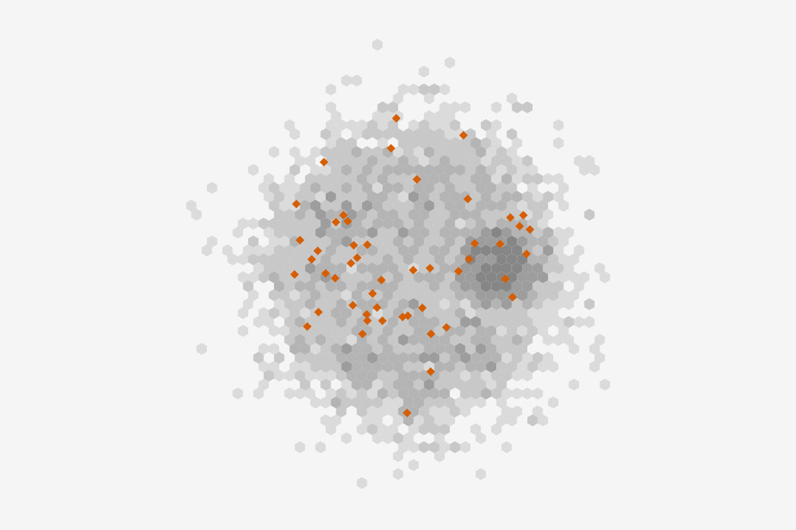
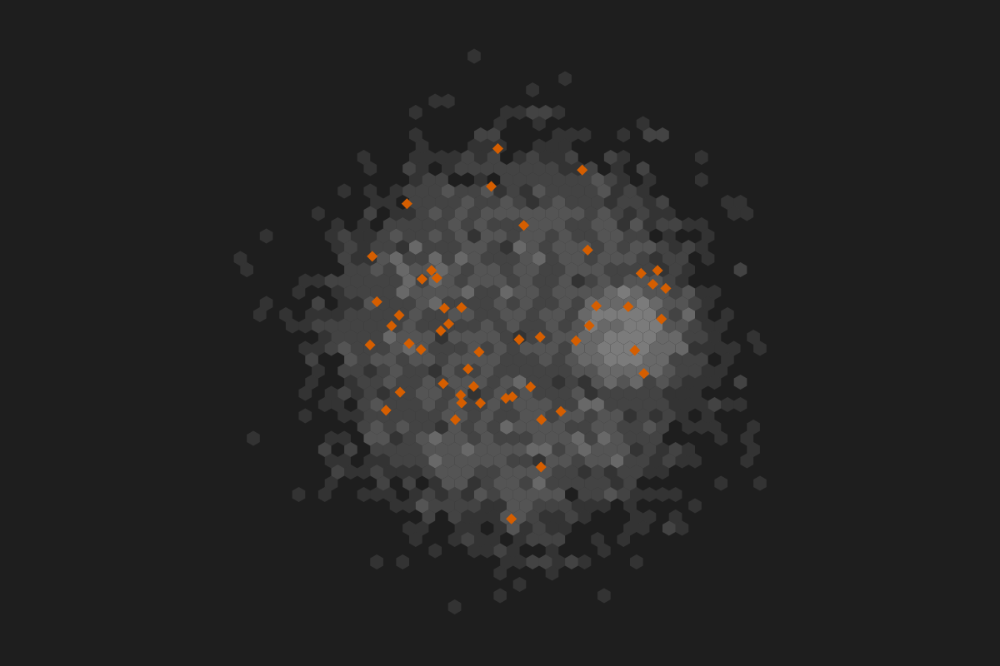

NodesEdges
Rule set Alerts: 50 of 3,000 nodes. Sorted by alertId, the order the monitoring system raised them.
| alertId | id | kind | alertScenario | riskScore | Links (count) |
|---|---|---|---|---|---|
| AL-40116 | ACC-320717 | personal | Money out within 24 hours of money in | 35 | 5 |
| AL-40117 | ACC-302798 | business | One counterparty took over 80% of outflow | 61 | 11 |
| AL-40118 | ACC-841488 | personal | One transfer of 9,000 to 9,999 USD | 35 | 3 |
| AL-40119 | ACC-747530 | personal | One transfer of 9,000 to 9,999 USD | 66 | 4 |
| AL-40120 | ACC-147975 | personal | Money out within 24 hours of money in | 75 | 5 |
| AL-40121 | ACC-749505 | personal | One transfer of 9,000 to 9,999 USD | 71 | 5 |
| AL-40122 | ACC-365386 | personal | Structuring: 3 or more transfers of 9,000 to 9,999 USD out in 30 days | 92 | 8 |
| AL-40123 | ACC-492465 | business | Outflow over 3 times its 3-month average | 53 | 10 |
| AL-40124 | ACC-418991 | business | One counterparty took over 80% of outflow | 63 | 7 |